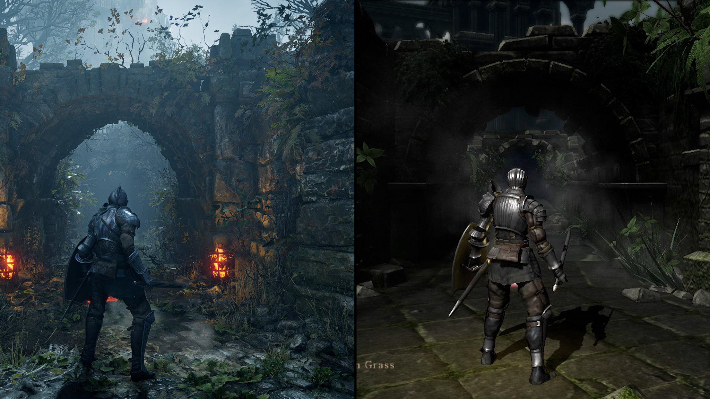

Admin
12 de Novembro,
2020
10 Comentários
COMPARANDO DEMON'S SOULS REMAKE COM O ORIGINAL (Análise e Comparação)
Comparação entre a versão original lançada em 5 de fevereiro de 2009, produzida pela Fromsoftware, e o remake lançado em 12 de novembro de 2020, produzido pela Bluepoint.